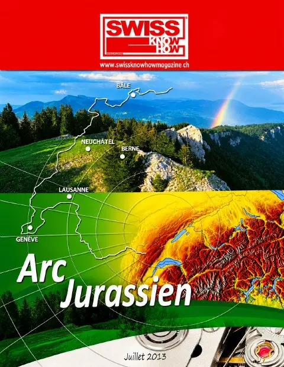

Olivier et Philippe Schiess dirigent L. Klein AG, entreprise familiale biennoise fondée en 1946, stockiste et négociant d'aciers fins et de métaux devenue un fournisseur international, filiale de la Schiess Holding AG présidée par Rudolf Schiess. Elle livre aciers inoxydables spéciaux, aciers au carbone, aciers au chrome trempables, alliages de titane et de cobalt-chrome, sous forme de barres de 3 m, profilés et couronnes de 0,20 à 30 mm pour le décolletage. Ses clients appartiennent surtout à l'horlogerie, au médical et dentaire, à l'automobile et à la micromécanique ; 40 % du chiffre d'affaires est réalisé à l'export, de l'Europe à l'Asie et aux États-Unis. Avec le métallurgiste Pierre Marechal, l'entreprise a lancé des aciers issus de la métallurgie des poudres, LAW 100 X et CHRONIFER M-15 X, à la structure plus fine et homogène. Son bâtiment combine photovoltaïque, chaudière à bois, couplage chaleur-force et capteurs solaires. Texte en allemand et en français.
Texte rédigé avec l'aide de l'IA à partir de l'édition imprimée du magazine. En savoir plus
« Jedes Pulverkorn enthält die von uns vorgegebene Analyse. »— Olivier Schiess
Personnes citées
- Olivier SchiessGeschäftsleiter
- Philippe SchiessGeschäftsleiter
- Rudolf SchiessVerwaltungsratspräsident der Schiess Holding AG
- Pierre MarechalMetallurge

Paru dans
Swiss Knowhow – Arc jurassien 2013
2013 · page 96-99 · article original en allemand
Signaler une erreur